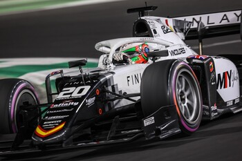
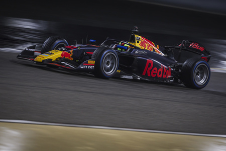

-Es una escudería de automovilismo española con sede en Alcira, en la provincia de Valencia, fundada en 1997 por el expiloto de Fórmula 1 Adrián Campos.
-Actualmente compite en seis categorías de monoplazas: Campeonato de Fórmula 2 de la FIA, Campeonato de Fórmula 3 de la FIA, Campeonato de España de F4 y las recientes Fórmula Winter Series, Eurocup-3 y F1 Academy de 2023.
Una de las mejores temporadas del equipo español fue en 2018 cuando quedo quinto en el mundial de contructores,hasta ahora el mejor resulatado en el mundial de lo que lleva Campos en la F2.
Despues en la temporada 2019 su segundo mejor resultado fue séptimo en el mundial de constructores.
La temporada 2024 pinta muy bien para campos con la llegada de Pepe Martí al equipo y los patrocinadores de RedBull.
 